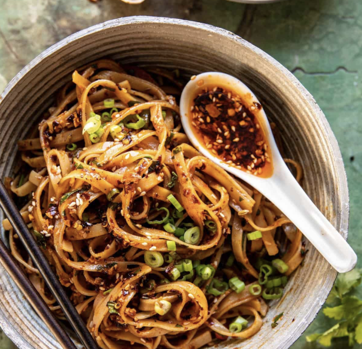

<!DOCTYPE html>
<html lang="en">
    <head>
    <meta charset="UTF-8">
    <title> Garlic Chili Oil Noodles <title> 
    </head>
    <body>
        <h1> Garlic Chili Oil Noodles </h1>
        
        <p> I think it's an interesting and delicious dish. i will try to cook it in the future. And this dish is credit to AllRecipes. </p>
        <h2> Ingredents </h2>
        <ul>
        <li> 1 pack ramen noodles </li>
        <li> 2 teaspoons seseme oil </li>
        <li> 2 teaspoons soy sauce </li>
        <li> 1 teaspoon chili oil </li>
        <li> 4 cloves garlic, minced </li>
        <li> 1 pinch black seseme seeds </li>
        <li> 2 green onions </li>
        </ul>
        <h2> Steps </h2>
        <ol>
        <li> Bring a pot of water to a boil over high heat. Add ramen noodles, and cook until tender, 3 to 4 minutes </li>
        <li> Meanwhile, heat sesame oil, soy sauce, and chili oil in a wok over medium-high heat </li>
        <li> Add garlic and stir fry until fragrant, 30 to 45 seconds. Remove from heat. Drain ramen noodles, add to the wok, and toss to coat. Sprinkle with sesame seeds and scallions for garnish. Enjoy! </li>
        </ol>
    <strong> Credit: </strong> <a href="https://www.allrecipes.com/garlic-chili-oil-noodles-recipe-7496389"></a>
    </body>
</html>